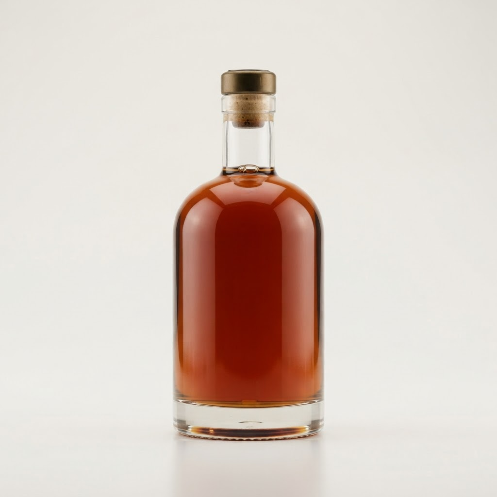

Сколько стоит рома havana club купить в Красносельском районе
Содержание
Красносельский район отличается плотной застройкой и активным ночным ритмом. Здесь вопрос, где и сколько стоит рома havana club купить, решается через экспресс-сервисы, которые доставляют напитки прямо до двери за один час.
Сколько стоит рома havana club купить в Красносельском районе
Популярная ошибка — попытка сэкономить через круглосуточные магазины на окраинах, где наценка сочетается с потерей времени на дорогу. Если рассматривать покупку через сервис ночной доставки, то итоговый чек складывается из стоимости самого напитка и логистической надбавки за срочность. Сравнивая эти варианты, становится очевидно: прямой визит в торговую точку требует затрат на такси, а также времени, которое в ночное время стоит дороже денег. Заказывая доставку, вы оплачиваете комфорт. В Красносельском районе стоимость курьерских услуг фиксирована, а работа сервиса за час исключает необходимость планировать вечер заранее. Мастерство экономии здесь заключается в расчете совокупных трат: цена бутылки в онлайн-каталоге плюс доставка часто оказываются сопоставимы с розничной ценой в дальнем супермаркете, но без усилий и ожидания. Мы анализируем рынок постоянно, поэтому выбираем оптимальных поставщиков, чтобы ваш бюджет оставался в рамках разумного.
Стоит ли доплачивать за экспресс-сервис
Сравнительный анализ показывает, что ожидание курьера в течение часа экономит не только силы, но и средства, если учесть расходы на ночной транспорт. В Красносельском районе конкуренция среди служб доставки высока, что удерживает прайс на адекватном уровне. Когда вы решаете, сколько стоит рома havana club купить с учетом логистики, важно помнить о качестве сервиса. Профессиональные службы гарантируют сохранность тары и соблюдение температурного режима, чего нельзя ожидать от случайных курьеров. Затраты на такую услугу оправданы отсутствием рисков и скоростью обслуживания. Если вы цените свое время и статус вечера, переплата за час ожидания нивелируется высоким уровнем комфорта и гарантией наличия напитка. Сравнение показывает, что переплата за срочность — это выгодная инвестиция в бесперебойный ход вашего досуга, исключающая любые организационные сбои.
Осуществляется ли доставка в самые удаленные точки Красносельского района?
Да, наши курьеры работают по всей территории района без исключений. Мы гарантируем доставку в течение часа вне зависимости от вашего точного местоположения. Это обеспечивает максимальное удобство для клиентов в любое время ночи.
Итог
Итог всегда один: назвать следующий шаг покупателю — оформить заказ и получить его в течение часа в своём районе.
Заказать доставку
Оформите заказ сейчас: привезём за 40-60 минут в любой район Петербурга, круглосуточно.
ПризывНаши статьи
 Сколько стоит ром bacardi negra купить в Красносельском районеКрасносельский район отличается плотной застройкой и активным ночным ритмом. Когда возникает срочная потребность в качественном алкоголе, поиск надежного кур…
Сколько стоит ром bacardi negra купить в Красносельском районеКрасносельский район отличается плотной застройкой и активным ночным ритмом. Когда возникает срочная потребность в качественном алкоголе, поиск надежного кур… Сколько стоит bacardi 151 купить в Красносельском районеКрасносельский район отличается динамичным ритмом жизни, где вечерний отдых часто требует оперативных решений. Наша служба обеспечивает доставку напитков за …
Сколько стоит bacardi 151 купить в Красносельском районеКрасносельский район отличается динамичным ритмом жизни, где вечерний отдых часто требует оперативных решений. Наша служба обеспечивает доставку напитков за … Сколько стоит ром bacardi carta купить в Красносельском районеКрасносельский район отличается активной ночной жизнью, где потребность в качественном алкоголе возникает внезапно. Мы обеспечиваем оперативную доставку напи…
Сколько стоит ром bacardi carta купить в Красносельском районеКрасносельский район отличается активной ночной жизнью, где потребность в качественном алкоголе возникает внезапно. Мы обеспечиваем оперативную доставку напи…
Сколько стоит коньяк коктебель 7 купить в Красносельском районеКрасносельский район славится своей динамикой, но найти качественный алкоголь глубокой ночью здесь бывает непросто. Мы решили эту проблему, внедрив систему э…